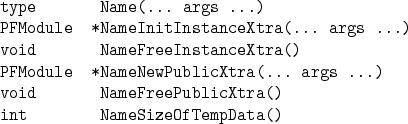
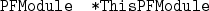

A module consists of a single C-file containing two structures, PublicXtra and InstanceXtra, and six functions. If the module name is Name (the name argument passed into the PFModuleNewModule routine described in 4.1 above), then the six module functions that need to be written are given by:

The function Name is the module's main routine, and is invoked by the PFModuleInvoke command.
The function NameInitInstanceXtra and NameFreeInstanceXtra create/modify and destroy the InstanceXtra structure of a module. The NameInitInstanceXtra routine is invoked by both the PFModuleNewInstance and PFModuleReNewInstance commands, and the NameFreeInstanceXtra routine is invoked by the PFModuleFreeInstance command.
The function NameNewPublicXtra and NameFreePublicXtra create and destroy the PublicXtra structure of a module. The NameNewPublicXtra routine is invoked by the PFModuleNewModule command, and the NameFreePublicXtra routine is invoked by the PFModuleFreeModule command.
The function NameSizeOfTempData returns the number of contiguous doubles needed as temporary data, and is invoked by the PFModuleSizeOfTempData command. This routine assumes that the InstanceXtra structure has been created, and that particular instance parameters have been initialized.
Notice that none of the above routines have modules or Xtra structures in their argument lists. This information is made available to each of the module functions by means of the global variable,

In any of the module functions above, the module assigned to ThisPFModule is Name. It is important to note that each time any of the routines listed in 4.1 is invoked, the value of ThisPFModule changes. Therefore, it is highly recommended that a local pointer to ThisPFModule be set at the beginning of each of the above module functions (see e.g. 4.3).